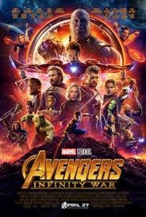

Name:- Avenger endgame
Ratting:- ★★★★★
After the snap, the surviving Avengers track Thanos only to find he has destroyed the stones, leaving them with no hope. Five years later, Scott Lang escapes the Quantum Realm and proposes a "time heist," suggesting they use time travel to retrieve the stones from the past.
The team reunites and travels to different timelines, facing various challenges and the tragic sacrifice of Natasha Romanoff for the Soul Stone. They eventually return to the present and build a new gauntlet, which Bruce Banner uses to bring everyone back to life.
Their victory is interrupted when a past version of Thanos follows them to the present and attacks. A massive battle erupts, bringing back all the restored heroes to fight Thanos’s army. In a final act of heroism, Tony Stark uses the stones to wipe out Thanos and his forces, sacrificing his own life in the process.
The story ends as Steve Rogers returns the stones to their proper times and chooses to stay in the past to live a quiet life, eventually passing his shield to Sam Wilson

Name:- Avenger infinity war
Ratting:- ★★★★★
Thanos begins his quest to collect all six Infinity Stones, aiming to wipe out half of all life in the universe to achieve "balance." He attacks the Asgardian ship, killing Loki and defeating Thor to claim the Space Stone. Meanwhile, his followers, the Black Order, descend upon Earth to retrieve the Time Stone from Doctor Strange in New York and the Mind Stone from Vision in Scotland. This forces the Avengers, the Guardians of the Galaxy, and the nation of Wakanda to form a desperate alliance to stop the Mad Titan’s path of destruction.
The conflict splits into two major fronts: a group including Iron Man, Spider-Man, and Doctor Strange battles Thanos on his home planet, Titan, while Captain America and the remaining heroes defend Vision in Wakanda. Despite their bravery, Thanos proves nearly unstoppable, even sacrificing his daughter Gamora to obtain the Soul Stone on Vormir. On Titan, Doctor Strange views millions of possible futures, seeing only one where the heroes win, before ultimately surrendering the Time Stone to Thanos to save Tony Stark's life.
The final stand takes place in the forests of Wakanda. As Thanos arrives, the heroes make a last-ditch effort to destroy the Mind Stone, but Thanos uses the Time Stone to undo the act and completes his gauntlet. Despite Thor severely wounding him with his new axe, Stormbreaker, Thanos survives and snaps his fingers. In a shocking conclusion, half of the universe's population, including many beloved heroes, disintegrate into ash, leaving the survivors in total despair as Thanos retreats to a quiet planet to watch the sunrise.

Name:- john wick
Ratting:- ★★★★★
John Wick is a retired super-assassin grieving the recent death of his wife. She leaves him one final gift, a beagle puppy named Daisy, to help him find hope again. However, his peace is shattered when Iosef Tarasov, the arrogant son of a Russian crime lord, breaks into John’s home, steals his vintage Mustang, and kills the puppy. This act of violence forces John to dig up his old gear and return to the underworld he fought so hard to leave behind.
John travels to the Continental Hotel, a safe haven for assassins, and begins his relentless hunt for Iosef. His former boss and Iosef’s father, Viggo Tarasov, knowing John’s lethal reputation as the "Baba Yaga," sends waves of hitmen to stop him. John fights his way through a nightclub and safe houses, demonstrating incredible skill and precision. Along the way, he navigates the strict rules of the assassin society, dealing with old acquaintances like Marcus and the treachery of others who try to collect the bounty on his head.
In the final showdown, John successfully corners and kills Iosef, fulfilling his quest for vengeance. He then takes down Viggo and his remaining forces in a brutal dockside battle. Despite being badly wounded, John breaks into an animal clinic to treat his injuries and ends up adopting a new pitbull puppy. The movie ends with John walking home with the dog, having reclaimed his identity and found a small reason to keep going.